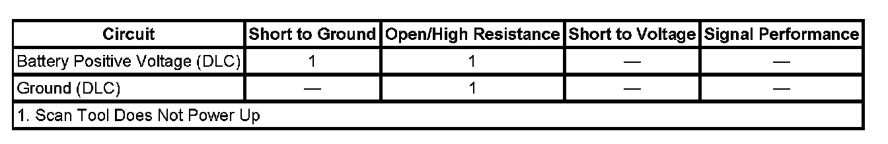

Scan Tool Does Not Power Up
SCAN TOOL DOES NOT POWER UP
DIAGNOSTIC FAULT INFORMATION

Perform the Diagnostic System Check - Vehicle prior to using this diagnostic procedure Initial Inspection and Diagnostic Overview.
CIRCUIT/SYSTEM DESCRIPTION
The data link connector (DLC) is a standardized 16 cavity connector. Connector design and location is dictated by an industry wide standard, and is required to provide the following:
- Scan tool power battery positive voltage at terminal 16
- Scan tool power ground at terminal 4
- Common signal ground at terminal 5
DIAGNOSTIC AIDS
- The scan tool will power up with the ignition OFF. Some modules however, will not communicate unless the ignition is ON and the power mode master (PMM) module sends the appropriate power mode message.
- If the battery positive voltage, ground circuits and connections of the DLC are functioning properly, the malfunction must be due to the scan tool/CANdi module.
- Use the DMM MIN/MAX function to capture/locate intermittent conditions.
CIRCUIT/SYSTEM TESTING
1. Ignition ON, test for battery voltage between the battery positive voltage circuit of the DLC and ground.
- If less than battery voltage, repair the voltage supply circuit for a short to ground or an open/high resistance.
2. Test for less than 1 ohm of resistance between the ground circuit of the DLC and ground.
- If greater than 1 ohm, repair the ground circuit for an open/high resistance.
3. If all tests normal, refer to the scan tool/CANdi module user guide.
REPAIR INSTRUCTIONS
Perform the Diagnostic Repair Verification after completing the repair. Verification Tests